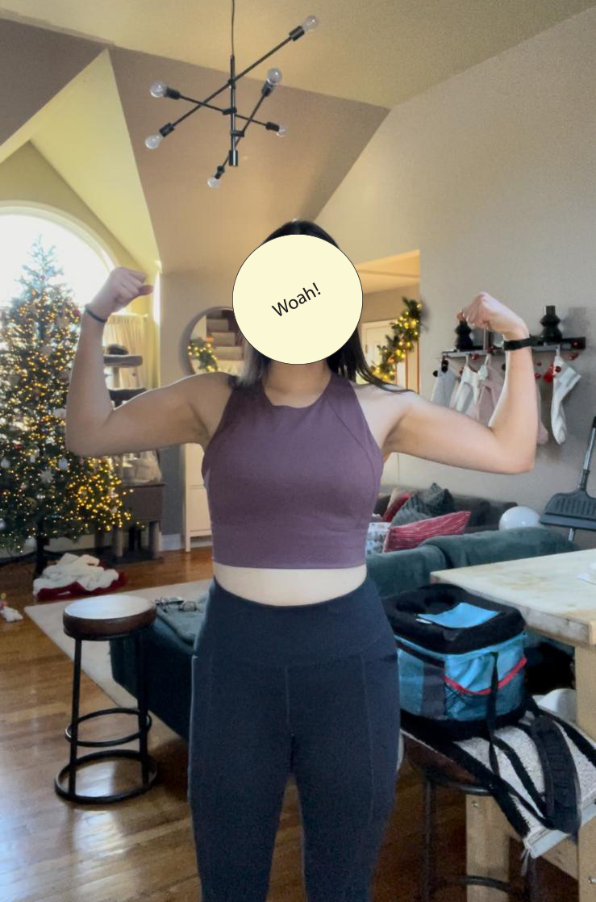
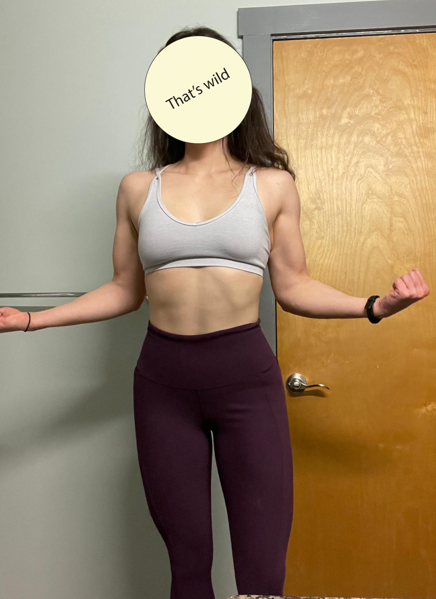

Hey there, my name is actually Ollie.
I am a girl who loves to lift!
I started weightlifting a year ago! Since then I have succesfully undergone body recomposition and one maingaining phase. All self-coached!
This is me, before and after one year of Lifting


there's only a 4lb difference betweent these two pictures! :O
If you'd like to follow along my journey, this is the place to be!